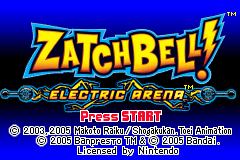

Zatchbell! - Electric Arena (USA)
EEPROM 4K
Cartridge Identity
- Game Code
A4GE(FamilyA4G)- Header Title
ZATCH EA1- Maker / Revision
B2/ rev0- ROM Size
- 8.0 MiB (8,388,608 B)
- Save Media
EEPROM 4K- SHA-256
64f09e7100c5734047b375da09ee9207ae95d249b65e0bc28433839b9fac0cf9- Engine / SDK Group
comm-002(145 families)
Screenshots


Observed Battery Save Layout
- Fill Byte & Active Size
0xFFfill · 128–128 / 512 B active (entropy 0.48 bits/B)- Active Offset Ranges
0x0–0x7F(1 total)- ASCII Magic / Headers
n0230113- Observed Variable Regions
- 0 bytes across 0 spans: None
- Candidate Checksum/Counter Spans
- None
ROM Assets, Compression & Audio
- BIOS Compression
- LZ77 (
0x10): 33 streams · RLE (0x30): 56 streams - ROM Pointer Tables
- 53 tables (2 pointing to validated compressed streams)
- SDK Backup Tags
EEPROM_V124
Hardware MMIO Subsystems
ppu_display0x8003220
Regional Variants & Revisions (Family A4G)
- Konjiki no Gashbell!! - Unare! Yuujou no Zakeru (Japan) (
A4GJ, 8 MiB)